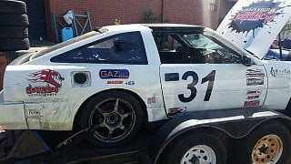
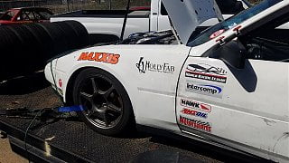
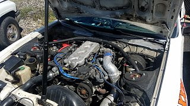
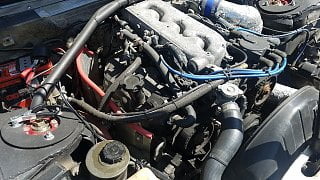
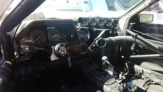
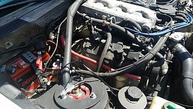
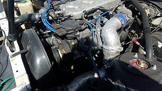
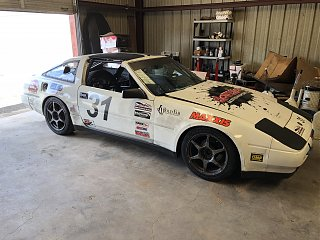

-
Hey guys, new to the Z31 game but have had a z32TT for about 20 years.
Just bought an â87 Z31 with a 2000 pathfinder engine swapped in. Still using the oem ecu/engine management. This is a fully caged, track only car that I will be running in Lemons, WRL, and Champ series endurance races. Other than the engine swap and GAZ Coilovers, itâs all stock.
ive been trying to read as much as I can on here and I am learning quite a bit but would like a little advice.
1) I have contacted Jim Wolf to inquire about a tune but havenât heard anything. Any other advice regarding a chip swap or tune? Obviously, Iâd really like to get all the power I can out of it…safely/reliably.
2) Any advice on modest upgrades that would make life easier for me considering the use of the car? Brakes, hubs, intake? Iâve been reading a little about the Z32 or Z33 brake upgrades but all the links are dead…
I look forward to hearing back from you all and learning as much as I can!  Last edited by ericgavinroberts; 05-12-2018, 08:42 PM. -
Here's 2 mirrored links with useful information.
http://redz31.suomiz.net/
http://zbum.suomiz.net/
As far as broken links have you tried opening it in Google chrome? Sometimes that works for the broken photobucket links. I personally wouldn't recommend the JWT ecu/tune. They're generally pig fat & only grant minimal gains. If you want a plug & play solution that uses the factory harness Nistune is your only option. Redz31 covers a good bit of the modifications you've asked about. Do your class rules allow you to do a NA2T swap? If so I'd got that route.Originally posted by Racinjitter -
Pretty cool looking Z. If you get a chance can you post some more pics.
What did they do to the strut towers? Looks like they welded another piece on top of them?
You can get isky regrinds for cams and some do the pathy intake. Does it have headers?
Like Nismo Kid was saying, if you get google chrome, then click on the 3 little dots top right, go to more tools, then extensions, scroll to the bottom and do get more extensions, then find Photobucket Hotlink Fix. Won't fix links, but you can see the photobucket pictures.
Nistune's website https://www.nistune.com/
Michael Palladino did 224 whp with just cams, headers, exhaust, plenum with a worn out VG30e. -
Thanks for the help, guys. Iâve been using my iPhone for the most part. Was able to get the links nismokid posted, looking forward to reading through those sites.
We we donât really have any class rules as I donât really run in any spec series, Lemons is more budget minded and WRL is pretty easy to work with so mods arenât really a problem. Thanks for the NISTUNE recommendation, Iâll shoot them an email today.
As as far as mods, from what I can gather, the previous owner took the engine out of a 2000 Pathfinder, did a little valve job and some very basic porting of the heads along with an engine refresh so engine should be good. He put aftermarket headers on it but I believe their eBay headers if I had to guess. Strut towers were originally modified to allow camber adjustments because the series they raced in did not allow camber plates. But that rule changed later so they remkdified the towers to accept e36 camber/castor plates, which is whatâs on there now.
Got it home yesterday and it sounds like the throw out bearing is making some noise so a transmission pull may be in order. If that happens Iâll likely put in a new clutch, bearing, and rear mainseal. Will probably be back hear asking for advice on that as well!
any recommendations on a performance parts site? Who is everyone using? I have a Haynes manual on the way.
     -
Here's a link for the Factory Service manuals. They're much more helpful than the haynes & free.
http://www.xenonzcar.com/z31/fsm.html
Here's some places to buy parts
http://responsetype.com/product-cate…/fairlady-z31/
http://www.zcarparts.com
http://store.acadianasportscars.com Contact prior to ordering
z31online.com
There's orther place thats just a few. I normally find the parts numbers I'm looking for & buy them on amazon or ebay to be honest. The response type stuff is only available on his site. For a clutch contact southbend clutch they have awesome service! Cool car & good luck!Originally posted by Racinjitter -
Is that a 2+2 race car???
Schneider makes cam regrinds too. Has that plenum been gutted yet?
There's a good writeup on most of the performance possibilities here: http://www.z31.com/mods/
--------------
Legal stuff:
**Nissan Employee**
Any information shared is simply my own opinion and NOT the opinion of Nissan
not legal stuff:
'88 300ZX 2+2-- driving… just details left
'22 Q60RS-- I tell the wife it's hers…
'87 Chaparral bowrider-- the next project
'00 Corolla-- kids car.
'14 E-350-- Gotta haul those kids in something. -
Thanks for the site.
I donât think it was a 2+2, but I could be wrong! Iâll have to see if I can run the vin.
im not sure if the plenum has been gutted or not, have to see if I can figure it out. Cams will be something for the future I think. Right now Iâm hearing the throwout bearing noise and thatâs making me nervous so I think a new clutch/flywheel is going to be priority even though I despise dropping transmissions. Our first race is a 24hr endurance so itâs going to take a beating and if Iâm hearing it now, Iâm thinking it wonât make it. From what I can tell, as long as I get a 250mm flywheel, I can use a turbo clutch, correct? Or even a z32 clutch? What are peopleâs experience with the South Bend clutches? Any other recommendations?Last edited by ericgavinroberts; 05-15-2018, 01:37 PM. -
Definately a 2+2, longer wheelbase gives a bit more stability in long sweeping corners and the straights compared with the 2+0, no so good in the slower speed, tighter corners.. Prefer a twin plate clutch myself for race use.Last edited by 260DET; 05-20-2018, 04:50 PM. Reason: Edited for accuracy

Copyright © 2006–. All rights reserved. Privacy Policy